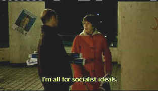

| New Eve/B,B+ |
| Image/1999/90/ANA 1.77 |
The New Eve is very funny although I would not classify it
a comedy. The outrageous behavior of the main character, Catherine, creates off-kilter comedy from
otherwise ordinary situations. Catherine's free-swinging lifestyle, seemingly equally
sexually at ease with men or women, sets The New Eve out on the edge. But underneath the
tough veneer, Catherine is just another lonely person looking for love. There are plenty of detours
in her life until she falls onto the right road, but even that is a pot-holed journey which wreaks
havoc on a seemingly happy home.
The sensual power of the film is undeniable. Catherine couples in sex with
pure animal magnetism and hunger. Catherine is such a flighty character, I found it difficult to
take her seriously, even when the film does. My guess is that I enjoyed the film more from the
humorous perspective.
 |
| Looking for socialist love? ©Image |
Karin Viard is marvelous as Catherine,
the girl in a identity crisis, jumping for happiness like a child sitting quite obviously too far
from the brass ring on a merry-go-round. Viard's natural performance, making Catherine's every mood
more nuanced than one might expect, insures that the The New Eve is ever more
watchable. The enigma of Eve's character is a fascinating trip. Most of the time her actions are
quite detestable, yet Viard somehow finds an earthy charm and innocence within Catherine.
Catherine Corsini's direction marries to the film with the same free
spirit embodied in her main character. Corsini appears to give the actors lots of freedom to expose
(sic) themselves. Credit the writer with giving the director characters with energy and libido.
Credit the director with realizing the need for on screen freedom. Corsini is one in the same.
On the downside, for a film set in Paris, not much is made of the glorious
location. Perhaps the sophisticated sense of the city might have added another layer of depth to
the emancipated characters. In fact, the film seems to live in a provincial world, lacking the beat
and worldliness of one of the greatest cities in the world.
A very handsome widescreen anamorphic transfer with consistently clean
images. Details are well-defined, color saturation is pleasing. Overall, if you saw this projected
in an art house theater, you'd be more than happy, you would be delighted. Yellow English subtitles
on the image are clear and well-proportioned. The titles come fast and furious at times, but it's a
measure of the rapid fire delivery of the film. The Dolby Surround is clean but none too
directional. Club scenes create a loud ambiance. Several sources list the film's
running time at 94 minutes, but the Image DVD runs only 90. The sexually is pretty frank and the
narrative flow does not seem unduly cut, so I can't even hazard a guess at what's missing.

Selections from the Feature Archive include articles on
Akira Kurosawa, Frank
Darabont, Blonde Bimbos, Hollywood Street Gangs, or Vietnam: The
Hollywood Pariah, and many more....
The Exquisite Muse of Zhang Yimou

The powerful image-making of Zhang Yimou has revealed itself in
virtually every film he has made. Coupled with his remarkable collaboration with actress Gong Li,
Zhang's has built a stunning body of work Click the image to read all about it.

The Movie Poster Archive includes extensive poster images from the films of stars like Susan Hayward, Kirk Douglas, Katharine Hepburn and many more. Our featured star is Lana Turner.


DVDPlanet is the DVD
incarnation of legendary laser retailer Ken Crane's. Deep discounts and serious service.

The name tells all.

Easy to use interface with lots of vintage posters for sale.

Now a major independent DVD distributor, Image has parlayed its laser disc business
to success. Great DVD release calendar info.